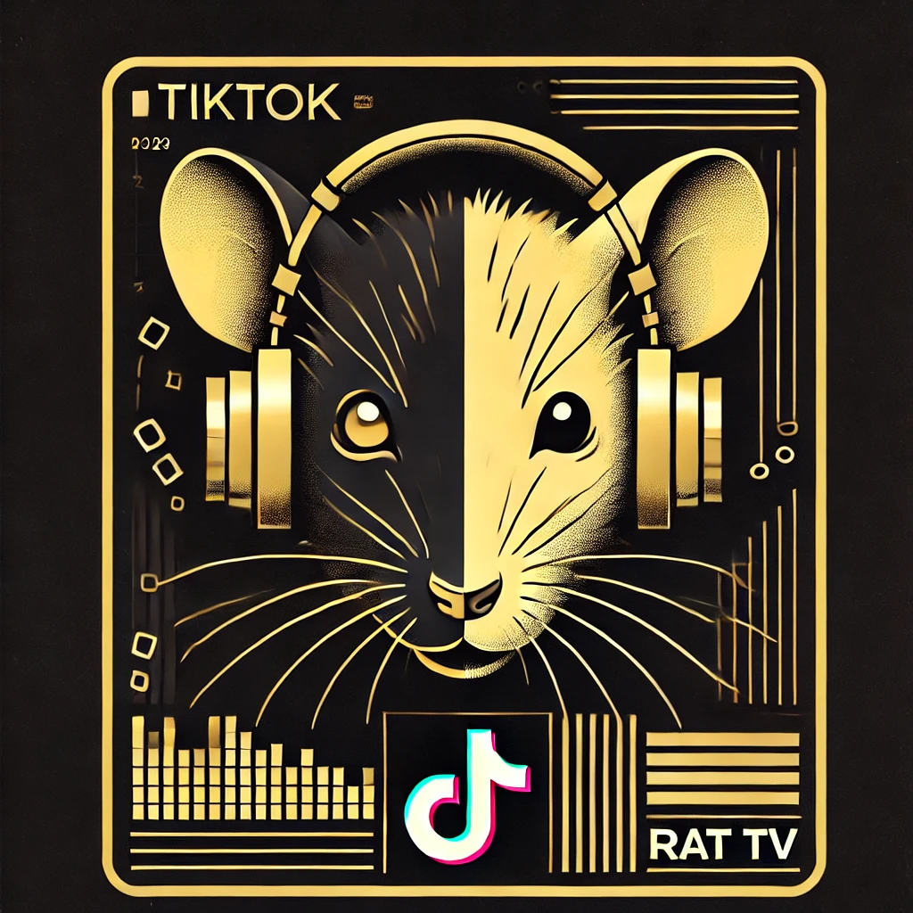

RAT TV Signs TikTok Sensation jackkmanngo: A New Era for Rat Content Creation
In a groundbreaking move that signals the merging of traditional media with digital creativity, RAT TV announced today the signing of jackkmanngo, a TikTok star beloved by millions, as its first-ever rat content creator, marking a significant milestone for Rat News Network's TV division.